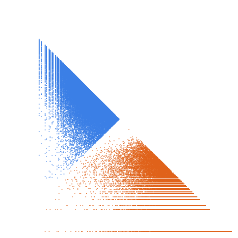

Lesser of twin primes

Open in the 3-D viewerA001359 on the OEIS
| Terms | 100,000 (n = 1 … 100,000) |
|---|---|
| Decomposable (a > 2d) | 99,996 |
| Level class, k > L | 47,766 · 47.77 % |
| Weight class, k ≤ L | 52,230 · 52.23 % |
| Ties, k = L | 0 |
| On the level line L = 1 | 16,811 |
| Forced level, l ≤ d² | 183 |
| Range of a(n) | 3 … 18,409,199 |
| Range of the jump d | 2 … 2,190 |
| Largest weight k, level L | 18,408,323, 1,665,595 |
Past 5 every term is 5 mod 6, so d = 0 and l = 5 (mod 6). No square is 5 mod 6, so k = L can never happen: zero ties, by proof rather than by count. l is prime to 6, so every weight is odd and not a multiple of 3. The level share is 47.77 %.
The decomposition
Every term of a strictly increasing sequence is written a(n) = k(n)·L(n) + d(n): the jump d = a(n+1) − a(n), the weight k the least divisor of a − d greater than d, the level L = (a − d)/k. A term decomposes when a > 2d; it is in the level class when k > L and in the weight class when k ≤ L. See decompwlj.com and arXiv:0711.0865, or how it works, with worked examples and a live one.